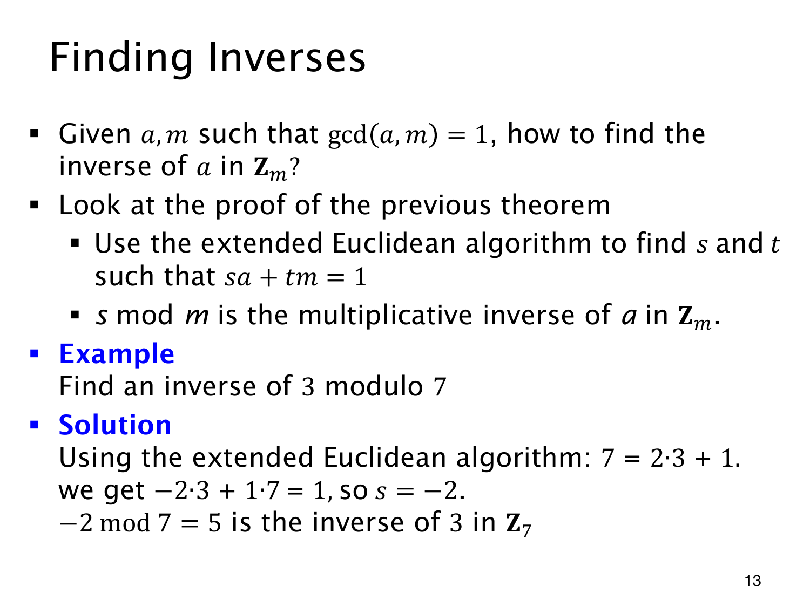

L1.13 · 第 13 页讲解原文
查看这一页课件

从 Bézout 系数读出逆元
求 3 模 7 的逆元，除法只需一步：
7=2⋅3+1,1=(−2)⋅3+1⋅7.
3 前面的系数是 −2。把它取回标准范围，−2mod7=5，所以模 7 下 3−1=5。乘回检查，3⋅5=15=2⋅7+1，确实余 1。−2 与 5 是同一个同余类的两个代表，并不矛盾。
一般在 gcd(a,m)=1 时，记录欧几里得除法步骤，再反向代回得到 sa+tm=1。逆元取 smodm，必须读 a 前面的系数，而非 m 前面的系数，最后乘回验算。
若最初求出的 GCD 不等于 1，回代依然能得到 GCD 的线性组合，却不能拿来证明乘积模 m 为 1。